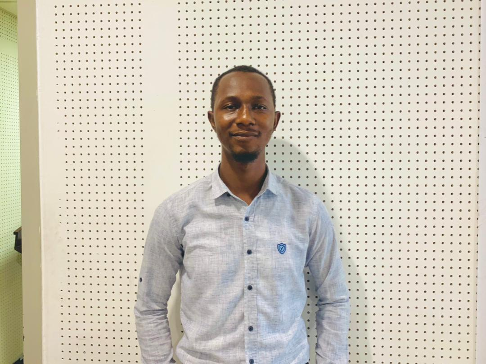
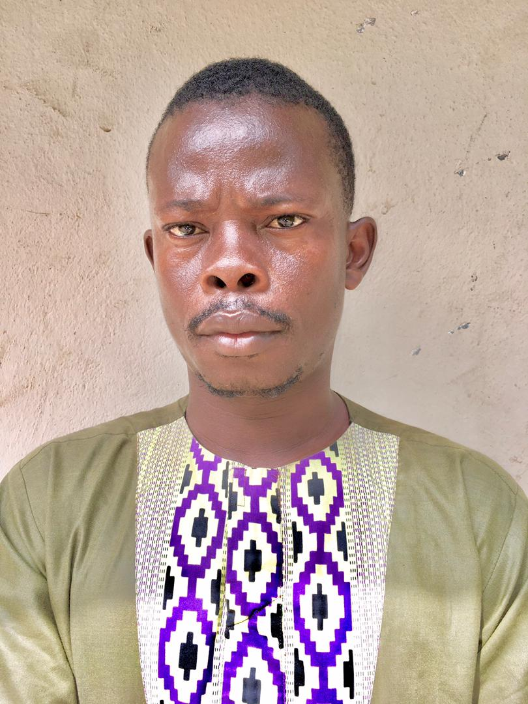

Esther Yealie Kamara
A gender equality and climate advocate from Freetown, Esther co-founded YICA-SL and leads its overall strategy. She represents Sierra Leonean youth on global platforms including the C40 World Mayors Summit and COP30 Local Leaders Forum.
.JPG)
Foday Mark Kamara
Foday co-founded YICA-SL and oversees all programmes — from the Young Women Climate Mentorship to community restoration and school gardens. He leads programme strategy, coordinates field operations and builds partnerships to scale impact.

Yusif Conteh
Yusif keeps the organisation running, managing administration and day-to-day operations across all programmes. He ensures resources, documentation and internal processes stay on track as the team grows.
Ishmail Amadu Jalloh
Ishmail leads YICA-SL's School Climate Education programme, building climate literacy among pupils across Sierra Leone. He designs curricula and coordinates school engagements that bring environmental learning into classrooms.
Osman Gibril
Osman coordinates logistics for field assessments, trainings and community events across the country. He makes sure the right people and resources reach the right places for every programme activity.

Wurie Ndayia
Wurie leads community outreach and education, running trainings and school engagements that build climate literacy. He connects YICA-SL's programmes directly with young people and communities on the ground.